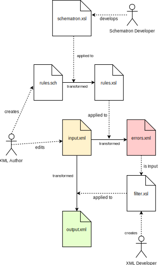

4.4.1
Validierung mit Schematron
Um die Korrektheit einer XML Instanz zu prüfen, gib es verschiedene Schemata, wie XSD, RNG oder DTD, welche der Parser beim
Aufbau des DOM Baums heranzieht. Eine Validierung mit Apache Xerces könnte beispielsweise als Java Code folgendermaßen angestossen
werden:
URL schemaFile = new URL("http://host:port/filename.xsd");
Source xmlFile = new StreamSource(new File("web.xml"));
SchemaFactory schemaFactory = SchemaFactory
.newInstance(XMLConstants.W3C_XML_SCHEMA_NS_URI);
try {
Schema schema = schemaFactory.newSchema(schemaFile);
Validator validator = schema.newValidator();
validator.validate(xmlFile);
System.out.println(xmlFile.getSystemId() + " is valid");
} catch (SAXException e) {
System.out.println(xmlFile.getSystemId() + " is NOT valid reason:" + e);
} catch (IOException e) {Schema Dateien können aber auch in XML Editoren eingebunden werden, um schon während der Eingabe der XML Instanz die Korrektheit
zu überprüfen.
Das geht einerseits über die Angabe des Doctypes in der XML Instanz, anderseits bieten auch alle Editoren die Möglichkeit
ein bestimmtes Schema explizit auszuwählen, um gegen dieses auf Anforderung zu validieren.
Gilt es komplexere Businessregeln zu überprüfen, die über Syntax-, Konsistenz- und einfache Korrektheitschecks hinausgehen,
empfiehlt sich eine Validierung mit Schematron Regeln.
4.4.1.1
Schematron ist XSLT
Bei einer Schematron Validierung wird eine XML Instanz mit Hilfe eines automatisch generierten XSLT Stylesheets überprüft.
Dieses kontextabhängige Stylesheet wird aus einer in der Schematron Syntax vom Autor verfassten Regelbasis, die wiederum in
XML vorliegt, über ein zweites XSLT Stylesheet generiert - Dieses zweite XSLT Stylesheet ist sozusagen das eigentliche Schematron
Programm.
Das folgende Diagramm veranschaulicht die Vorgehensweise anhand eines Filter-Szenarios, bei dem ein XML Dokument mit einigen
ungültigen Passagen in eine gefilterte Darstellung überführt wird.
Einfacher Batch-Prozess zur Validierung mit Schematron und anschliessendem Filtern der Ergebnisse

Bild: 5 Schematron Validierung mit Filter
Zu finden ist das Schematron Repo auf Github. Dieses Repo ist etwas unübersichtlich. Der relevante Teil des Sourcecodes befindet sich unter:
schematron/code
4.4.1.2
CLI Verwendung
Um die Schematron XSLT Skripte in eine eigene XSLT Anwendung per Kommandozeile einzubinden, könnte man folgendermassen vorgehen:
-
Im eigenen GIT Projekt das Schematron Projekt als Submodule referenzieren.
-
Eine Regelbasis anlegen, beispielsweise $project_name.sch .
-
Zwei Batch-Skripte anlegen, beispielsweise generate_schema.sh und validate.sh .
Mittels des Skripts
generate_schema.sh
wird aus der Schematron Regelbasis das Schematron XSLT Stylesheet generiert. Der Inhalt dieser Batchdatei könnte zum Beispiel
so aussehen:
saxon $script_dir/$project_name_validation.sch $script_dir/schematron/iso_dsdl_include.xsl | \ saxon -s:- $script_dir/schematron/iso_abstract_expand.xsl | \ saxon -s:- $script_dir/schematron/iso_svrl_for_xslt2.xsl \ generate-fired-rule=false > $script_dir/$project_name_validation.xsl
Der Prozess zum Erzeugen des projektspezifischen Validerungs-XSLT-Skripts ist dreistufig und wird über die folgenden XSLT
Schritte abgearbeitet.
-
iso_dsdl_include.xsl
-
iso_abstract_expand.xsl
-
iso_svrl_for_xslt2.xsl
Herauszufinden, was in diesen Skripten passiert, sei dem geneigten Leser selbst überlassen. Uns interessiert an dieser Stelle
nur das Resultat, nämlich das XSLT Stylesheet
$project_name_validation.xsl
.
Dieses Skript wird in der Batchdatei
validate.sh
aufgerufen:
saxon $xml_instance_to_check.xml $script_dir/$project_name_validation.xsl \ > $validation-result.xml
Die Ausgabe dieses Prüfprozesses ist eine XML Datei mit den Fehlern in der Eingabe-XML-Instanz, die weiterverarbeitet werden
kann, beispielsweise als Filterkriterium für einen nachfolgenden Prozessschritt. Ihr Inhalt dieser Datei sieht z.B. wie folgt
aus:
<svrl:schematron-output xmlns:svrl="http://purl.oclc.org/dsdl/svrl" [...] <svrl:active-pattern document="file:/Users/alex/xml_instance_to_check.xml" id="default" name="default"/> <svrl:failed-assert test="count(key('unique-ids', current()))=1"> <svrl:text>ID is not unique!</svrl:text> <svrl:diagnostic-reference diagnostic="default"> <bk:id xmlns:bk="http://tekturcms/namespaces/book">1234-5678-9</my:id> </svrl:diagnostic-reference> </svrl:failed-assert> [...]
Neben den
svrl:failed-assert
Elementen, die angeben, was bei der überprüften XML-Instanz fehlgeschlagen ist, gibt es auch die Möglichkeit sich positive
Ergebnisse anzeigen zu lassen - über das Element
svrl:successful-report
.
Konkret bedeutet das obige XML Schnipsel, dass unsere
id
mit dem Wert
1234-5688-9
im geprüften XML Dokument nicht eindeutig ist. Die Schematron Regelbasis, die wir zur Überprüfung angegebenen haben, sieht
so aus:
<schema xmlns:sch="http://purl.oclc.org/dsdl/schematron" [...] <xsl:key name="unique-ids" match="bk:id" use="."/> <sch:let name="date-regex" value="'^((19|2[0-9])[0-9]{2})-(0[1-9]|1[012]) -(0[1-9]|[12][0-9]|3[01])$'"/> <sch:pattern id="default"> <sch:rule context="book"> <sch:assert id="check-book-id" role="error" test="count(key('unique-ids', bk:id))=1" diagnostics="default">ID is not unique!</sch:assert> <sch:assert id="check-book-published" role="error" test="matches(bk:published,$date-regex) </sch:rule> [...] </sch:pattern> <sch:diagnostics> <sch:diagnostic id="default"> <xsl:element name="bk:id"> <xsl:value-of select="bk:id"/> </xsl:element> </sch:diagnostic> </sch:diagnostics>
Neben der "successful" und "failed" Regeln ist auch die Deklaration von Funktionen und Variablen im Body der Regelbasis erlaubt.
Dies ermöglicht komplexe Bedingungen, bespw. durch das Nachschlagen in einer Lookup-Tabelle abzuprüfen.